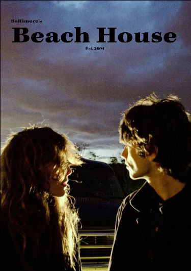

Beach House is an American indie band formed in Baltimore in 2004 by current members Victoria Legrand on vocals, keyboards and Alex Scally on guitar, keyboard, and backing vocals. Their work is characterized by a hypnotic dream pop style. Their self-titled debut album was released in 2006 to critical acclaim and has been followed by Devotion released in 2008, Teen Dream released in 2010, Bloom released in 2012, Depression Cherry released in 2015, Thank Your Lucky Stars released in 2015, 7 released in 2018, and Once Twice Melody released in in 2022
